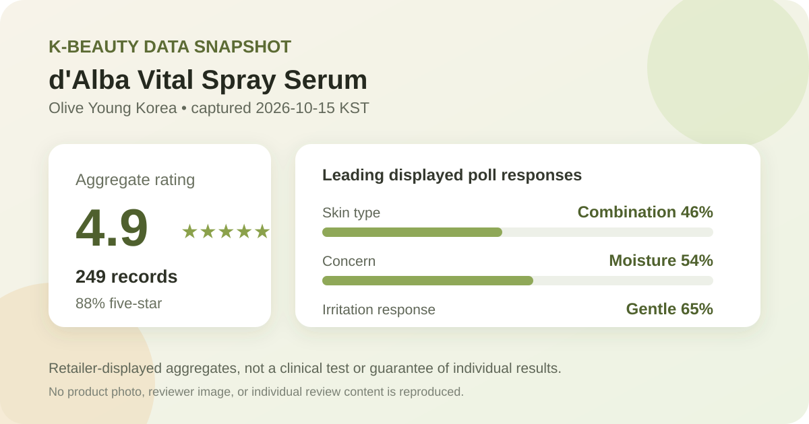
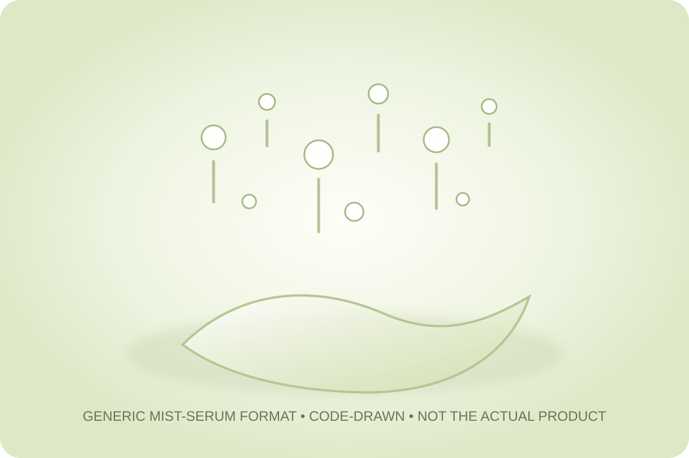

Data captured October 15, 2026. This analysis uses only Olive Young Korea's displayed aggregate rating, star distribution, and anonymous shopper polls. It does not reproduce or translate individual review text, names, or photos.

The short version: The listing showed 4.9 out of 5 from 249 review records. The displayed rating split was 88% five-star, 10% four-star, 2% three-star, and 0% each for two- and one-star. Combination skin, moisture concern, and the gentle response led their respective shopper polls.
The visible average was 4.9 stars. The product header displayed 249 review records, and the detailed review panel repeated the same count. That agreement matters because it avoids combining a current headline rating with a stale or unrelated review total.
The detailed panel also displayed the following rounded star distribution:
This is a strongly positive retail satisfaction pattern, but it is not a controlled result. The interface does not establish who was independently verified, whether every record used the same option, how long each person used it, or what else was in a routine. Zero percent in a rounded category also does not prove that no low rating exists; it means the retailer displayed zero after rounding.
The skin-type poll showed 46% combination, 45% dry, and 8% oily. The displayed whole-number shares total 99%, a normal rounding outcome. Combination and dry responses are essentially balanced, while oily representation is much smaller.
That composition is more useful for judging the sample than for predicting performance. A combination- or dry-skin reader can see that many respondents chose those broad labels. An oily-skin reader should note that only 8% of the displayed poll selected oily, leaving a thinner comparison pool. None of these categories controls climate, season, application amount, other products, or how each shopper defines their own skin type.
The separate concern poll displayed 54% moisture, 39% soothing, and 7% wrinkle or brightening concern. These figures describe the category respondents selected. They do not show how much moisture changed, whether visible redness changed, or whether pigmentation or wrinkles improved.
The product title includes wording equivalent to “Niacinamide 5%.” This article preserves that wording so readers can identify the exact listing, but it does not independently verify the current formula, ingredient source, concentration, stability, or regional equivalence. A percentage in a retailer title is not permission to infer clinical potency. Check the current package and regional ingredient label before treating it as a formula fact.
The irritation poll showed 65% gentle, 31% ordinary, and 4% felt irritation. The leading response is favorable, yet more than one third of the displayed poll chose either ordinary or felt irritation. That makes “universally gentle” an unsupported conclusion.
Self-reported retailer polls cannot diagnose sensitivity, identify an irritant, or predict a reaction. If you have a known allergy, an active skin condition, or a history of reactions, use the current ingredient list and warnings as the starting point and seek qualified advice when needed.

The retailer classifies the product as a spray serum and places it under mist and oil navigation. In general skincare language, that means a fluid leave-on product delivered through a spray mechanism. It does not tell us the exact droplet size, spray angle, scent, viscosity, oil-to-water balance, tack, sheen, absorption speed, or makeup compatibility.
I did not handle or apply this product. The visual above is deliberately generic and does not pretend to reproduce the formula. Follow the current package directions for distance, amount, shaking, frequency, eye-area cautions, and layering. A spray format also makes application amount hard to compare with a dropper serum unless the label provides a clear method.
At capture, the Korean listing showed a ₩59,800 reference price and a ₩35,900 promotional price for a 100 ml double-plan listing. The page also displayed a unit-price line of ₩1,795 per 10 ml. Prices, coupon eligibility, gifts, stock, and selected options can change quickly.
This snapshot is therefore a dated shelf anchor, not a current quote for another market. Before comparing value, confirm the number and size of bottles actually selected, the final checkout total, regional formula, seller, shipping, returns, and any gifts you would not otherwise buy.
The most defensible reading is narrow: this was the top-ranked skincare listing at capture, its 249-record rating profile was strongly positive, combination and dry respondents were nearly balanced, and moisture was the leading concern category. The irritation poll is favorable overall while still preserving a visible minority who did not choose gentle.
For someone comparing facial mists or spray serums, the data supports putting the product on a research shortlist. The next useful checks are the current regional ingredient label, directions, selected pack, and real checkout price. The data does not support calling it a guaranteed brightening treatment, a medical solution, a verified 5% formula in every market, or a certain match for sensitive skin.
Combination skin was the largest displayed skin-type response at 46%, followed closely by dry skin at 45%. That describes poll representation, not proven suitability or better performance.
The captured irritation poll showed 65% gentle, 31% ordinary, and 4% felt irritation. Those self-reported aggregate responses cannot predict individual tolerance or establish safety for a skin condition.
No. A retailer rating is a satisfaction signal, and concern-poll selections are not measurements of efficacy. This article does not convert either into a clinical claim.
The Korean listing name included wording equivalent to niacinamide 5 percent, but this analysis did not independently verify the current formula or label. Treat the percentage as retailer-displayed title text and check the current regional package.
The listing identifies a spray-serum format. This analysis did not apply the product, so it does not claim a specific mist fineness, scent, tack, sheen, absorption speed, or makeup compatibility.
Source: Olive Young Korea product page, captured October 15, 2026. Product title, ranking, pack, price, rating, review count, star shares, and poll values can change.
Published by The K-Beauty Data Desk. The source does not independently verify every buyer's identity. No individual review is reproduced or translated, and I did not test the product on my own skin. No product or user photograph is copied.
← All K-Beauty Data Desk reviews · Review-volume ranking · Skin-type poll view